2026年授業評価
🌸 第１学期（3年生）
授業内容 印象に残っている理由
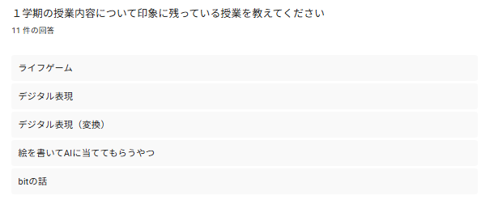
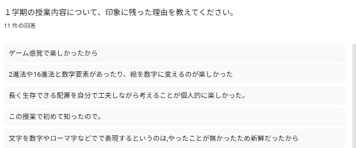
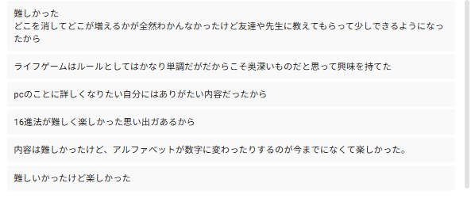
授業の満足度
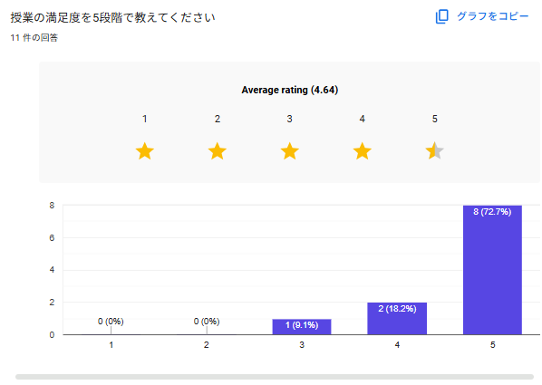
1学期情報Iの授業を受けて「こんなところがよかった」と思う部分
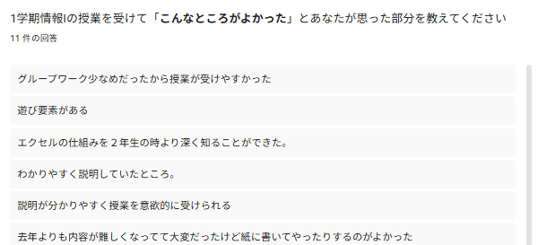
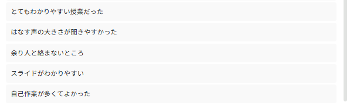
1学期情報Iの授業を受けて「ここよくなかった」ので「こういう風に改善してほしい」と思う部分
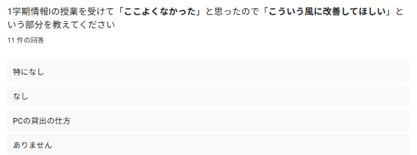
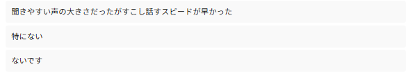
どのような授業スタイルだと受けやすいか
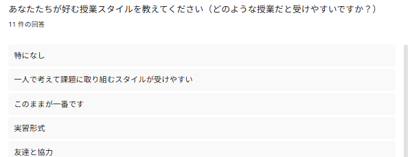
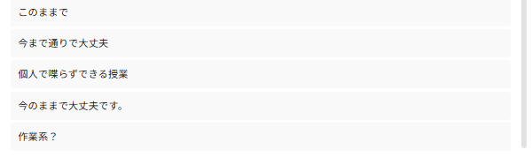
「情報 I 」１年間の授業を振り返って、自分が身につけられたことや成長できたことを教えてください。
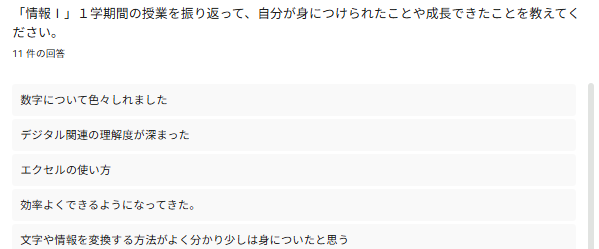
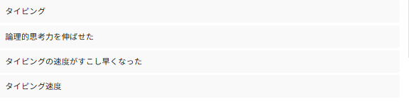
🌸 第１学期（2年生）
授業内容 印象に残っている理由
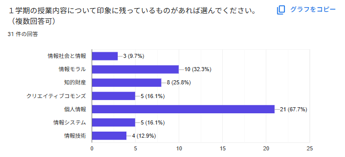
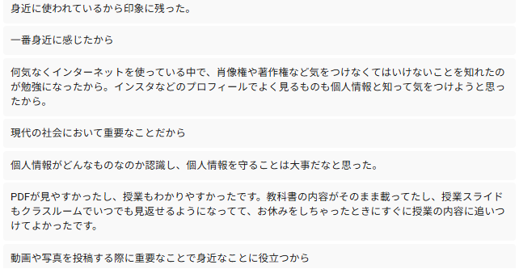
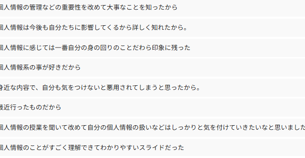
授業の満足度
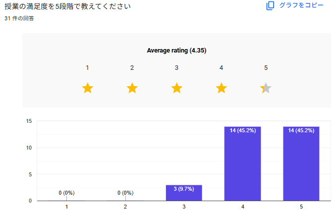
1学期情報Iの授業を受けて「こんなところがよかった」と思う部分
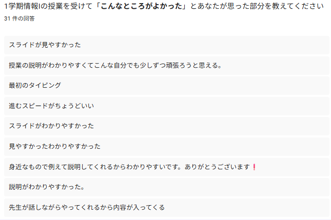
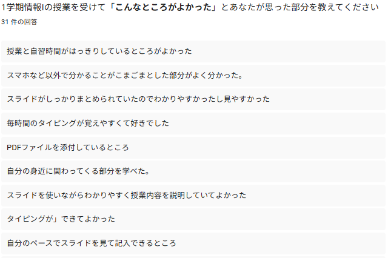
1学期情報Iの授業を受けて「ここよくなかった」ので「こういう風に改善してほしい」と思う部分
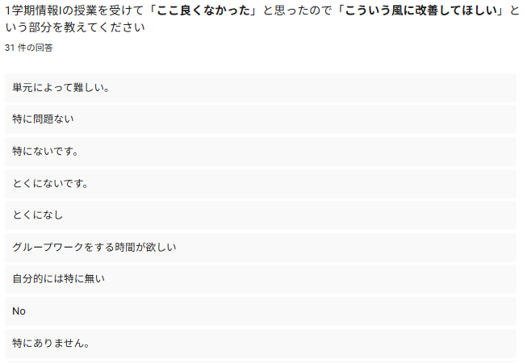
どのような授業スタイルだと受けやすいか
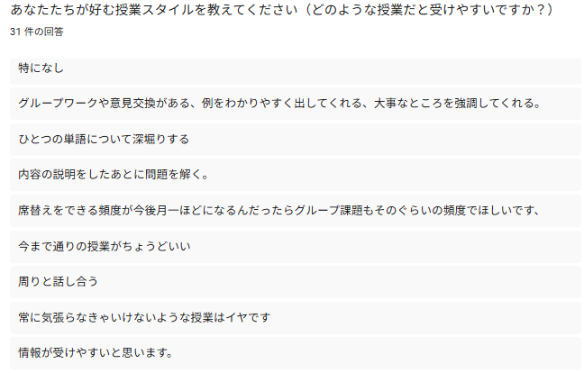
「情報 I 」１年間の授業を振り返って、自分が身につけられたことや成長できたことを教えてください。
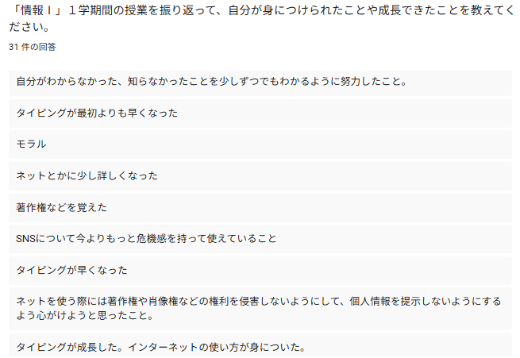
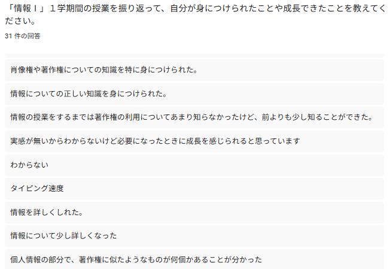
☀️ 第２学期
ここに２学期のコメントを書きます。


❄️ 第３学期
ここに３学期のコメントを書きます。


🛠 授業改善のために開発したツール
「もっと楽したい」という思いから、 授業で使用するシステムや業務改善ツールを作成しました。
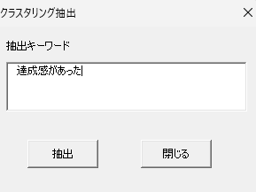
📊 振り返り分析システム
Googleフォームの振り返りを分析
開発理由
昨年、小林信治先生にご助言いただいて、振り返りをただ行って閲覧するだけでなく、 ちゃんと自分の授業改善につながるように生徒たちの振り返りを様々なキーワード群でクラスタリングできるExcelファイルを作成してみました。 （ChatGPTにかなりお世話になった）
具体的には、どのような単語が頻出しているのかということを可視化して、 自分の授業が本当に良かったのか悪かったのかをまとめる振り返り抽出ツールです。 ワードクラウドなどのツールでは、どのような単語が振り返り文中に頻出しているのか確認すると前後の文脈に関わらず、 頻出している単語を抽出するので、抽出された単語がどのような意味合いで書かれたものなのかを確認できないから用意しました。
まずは去年得られた振り返りのデータを用いて少しづつやっていこうと思っています。
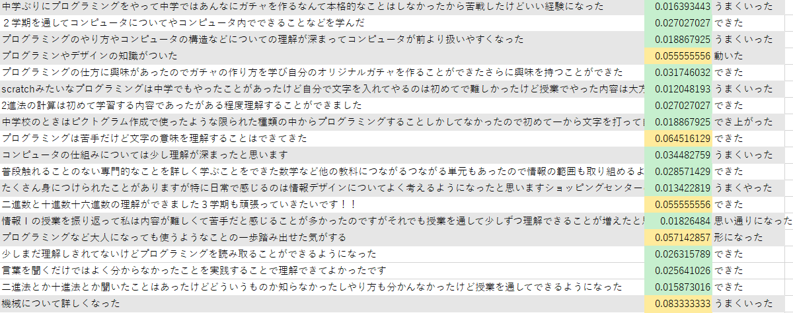
例えば「できた」というキーワードを入力して、そのキーワードが書かれている、 あるいは似ている文章を抽出してどのような文章で、入力したキーワードとどれくらい似ている文章なのかを出力しています。
あらゆる単語を一つ一つ個々に抽出作業をするのは大変すぎるので、 APIを使用して生成AIが入力したキーワードに似ている単語を考えてもらい、 自分の入力したキーワードとAIの出力したキーワード群で抽出しています。
その上で本当にプラスな振り返りなのか、マイナスな振り返りなのかをまとめていきます。
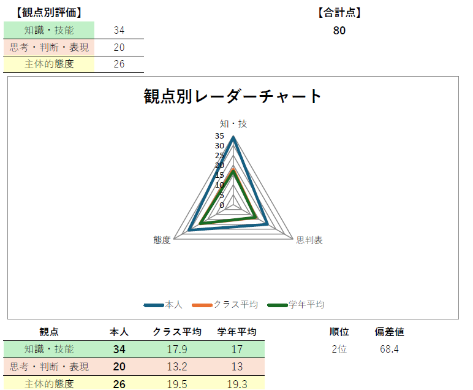
📄 テスト結果可視化システム
百問繚乱のようなテスト結果可視化システムを自作しました
開発理由
例年、マークシートの答案用紙を返却して、 模範解答用紙と照らし合わせてテストの点数に間違いがないか確認してもらうだけだったのですが、 全体のヒストグラムと各個人のレーダーチャートを載せ、 各問題の得点率から自分がどれだけできたのか各個人に印刷して可視化するようにしてみたらどうかなと思い、作ってみました。 （前年度では、自分の順位と偏差値を知りたいと言ってきた生徒にだけ提示していました）
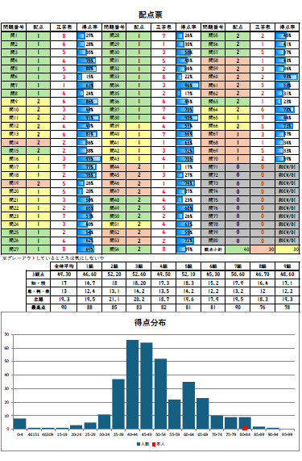
※データは昨年度のものを使用しています
※百問繚乱ユーザーじゃないから作ってみたのですが、 よくよく考えてみたら今年の勤務校ではテストを実施しないので使う機会がなかったです🤣
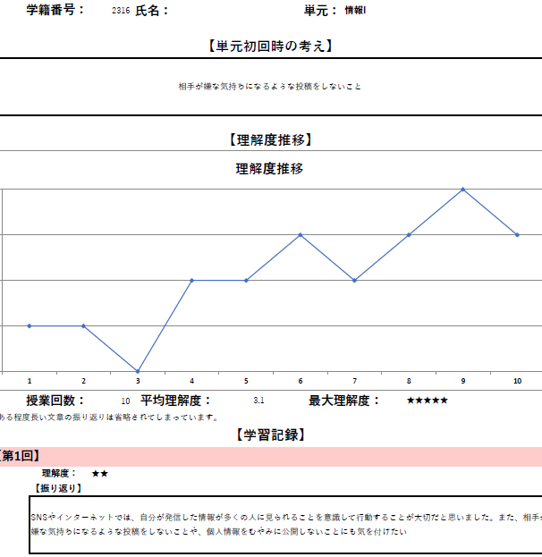
🔃 単元フィードバック
授業の振り返りを可視化
開発理由
毎回の授業ではないですが、GoogleFoamで授業の振り返りをしていました。 振り返りを書かせることだけやるのではなく、 生徒たちがどの授業の時にどのようなことを振り返っていたのか見えるようにしました。 単元の最初と最後は同じ質問にして第1回と最終回でどれくらい自分の振り返りが変化したのかわかるようにしてみました。
（※2026/6/18 横浜国際高等学校 鎌田高徳先生の授業を参考に真似させていただきました）
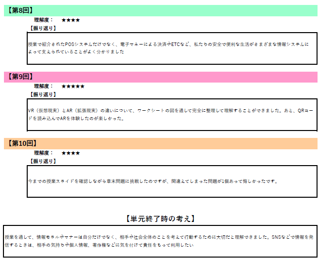
試験的にやってみたのですが、生徒たちの学習意欲向上にはあまり繋がらなかったですね😭😭😭😭😭
新天地の1年目
勤務校における生徒像と学校目標である 【社会に出て活用できる基礎、基本的な学力（確かな学力）を身につけさせるためにきめ細かい学習指導を行う】ことから、 今年は授業スタイルを実習メインのスタイルから講義（机上学習）メインの授業スタイルに変えてみたため、 去年のフィードバック事項である「実習における説明不足」や「用語の丁寧な説明」の部分を主に改善していきました。
結果としては、いただいた振り返りに「身近なもので例えて説明していてわかりやすい」 「スライドがしっかりまとめられていていたのでわかりやすかったし見やすかった」などのコメントから、 ある程度は去年と比べて改善されたのではないかと思っています。（提示しているスライドの恩恵が大きいように感じますが...）
また、今年は新たに「自分たちにとってどのような授業スタイルが受けやすいか」という質問を追加してみました。 理由としては、3年生に対しては、2年生時に受講した前任者の授業スタイルがどのようなものだったのかということの確認と、 2年生に対しては、新たに学ぶことになる情報Iがどのような授業だと受けやすいかの確認および、学校目標とのすり合わせ、学習意欲の向上のためです。 （生徒たちに迎合するのが良いのか悪いのかはわかんないですけど...）
2,3年生の振り返りからどちらもまぁまぁ好意的な感想をしていただきました。
情報科教諭（妹） みみみ 代筆